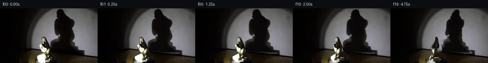

![首帧]()

Round 00
2026-11-05T04:59:11.049522+00:00像素候选变化代码 +192/−0inspection 更新
pixels 1135f18656aab44f · code 99f4c301414fc783
查看本轮 generate.py 真实 diff
--- previous/generate.py
+++ current/generate.py
@@ -0,0 +1,192 @@
+"""Reference-image continuation using local 2.5D section warps and fixed-light shadows."""
+from pathlib import Path
+import numpy as np
+from PIL import Image, ImageDraw
+import cv2
+from scipy.interpolate import RBFInterpolator, PchipInterpolator
+from scipy.ndimage import gaussian_filter, map_coordinates
+from artifact_io import save
+
+ROOT=Path(__file__).resolve().parent
+W,H=256,144
+S=4
+source=np.asarray(Image.open(ROOT/'first_frame.png').convert('RGB'),dtype=np.float32)
+yy,xx=np.mgrid[:H,:W].astype(float)
+
+def polygon(points):
+ im=Image.new('L',(W*S,H*S));ImageDraw.Draw(im).polygon([(int(x*S),int(y*S)) for x,y in points],fill=255)
+ return np.asarray(im.resize((W,H),Image.Resampling.LANCZOS),float)/255
+
+# The observed figure: hood, arm/child, seated robe, and porcelain plinth.
+stat_rows=np.array([
+ [74.5,112,115],[76,110,117],[78,109,119],[82,108.6,121],
+ [87,109,124],[91,109,126],[94,106,128],[97,103.5,129],
+ [101,104.5,130],[105,107,131],[109,109,131],[113,111,130],
+ [116,114,130],[119,112,130],[121,108,131],[124,102,132],
+ [127,97,134],[131,97,136],[135,99,136],[138,104,133],
+ [140,105,130],[141,110,125]],float)
+left=PchipInterpolator(stat_rows[:,0],stat_rows[:,1],extrapolate=False)
+right=PchipInterpolator(stat_rows[:,0],stat_rows[:,2],extrapolate=False)
+obj_poly=[(l,y) for y,l,r in stat_rows]+[(r,y) for y,l,r in stat_rows[::-1]]
+obj_alpha=polygon(obj_poly)
+
+# Large wall silhouette measured separately, because the light sees a different side.
+shadow_rows=np.array([
+ [1,154,160],[3,150,163],[7,148,165],[12,150,168],[16,150,173],
+ [20,146,180],[25,143,190],[30,142,194],[36,143,196],[42,143,194],
+ [49,144,190],[55,145,189],[61,145,193],[67,147,196],[72,151,196],
+ [77,154,195],[81,148,192],[85,140,191],[90,133,193],[96,131,196],
+ [101,131,196],[105,134,199],[110,136,204],[115,140,210],[119,145,213]],float)
+sl=PchipInterpolator(shadow_rows[:,0],shadow_rows[:,1],extrapolate=False)
+sr=PchipInterpolator(shadow_rows[:,0],shadow_rows[:,2],extrapolate=False)
+shadow_region=polygon([(l-3,y) for y,l,r in shadow_rows]+[(r+3,y) for y,l,r in shadow_rows[::-1]])
+shadow_region=gaussian_filter(shadow_region,.65)
+
+# Recover a smooth fixed wall illumination from visible, unoccluded wall samples.
+wall=(yy < 99+0.099*xx)&(xx>88)
+no_occ=(shadow_region<.01)&(obj_alpha<.01)&wall
+sample=no_occ & (xx.astype(int)%5==0)&(yy.astype(int)%5==0)
+coords=np.column_stack([xx[sample]/100,yy[sample]/100])
+rbf=RBFInterpolator(coords,source[sample],kernel='thin_plate_spline',smoothing=.18)
+wall_est=np.clip(rbf(np.column_stack([xx.ravel()/100,yy.ravel()/100])).reshape(H,W,3),0,255)
+# Foreground lamps and floor are never in the wall sample region.
+remove_shadow=shadow_region*wall
+clean=source*(1-remove_shadow[...,None])+wall_est*remove_shadow[...,None]
+# Remove the small statue while preserving the turntable and local table lighting.
+obj_remove=cv2.dilate((obj_alpha>.01).astype(np.uint8),np.ones((3,3),np.uint8))
+clean=cv2.inpaint(np.uint8(np.clip(clean,0,255)),obj_remove*255,5,cv2.INPAINT_TELEA).astype(float)
+# Retain the static pedestal shadow at the lower wall boundary.
+shadow_motion=np.clip((118-yy)/5,0,1)*remove_shadow
+atten=np.clip(source/(wall_est+1e-5),.055,1)
+# Optical depth, rather than painted black, keeps fixed wall brightness visible.
+optical=-np.log(atten)
+optical*=shadow_motion[...,None]
+# Correct boundary fitting: all pixels beyond removal remain exactly observed.
+background=source.copy()
+background=source*(1-remove_shadow[...,None])+wall_est*remove_shadow[...,None]
+background=np.where(obj_remove[...,None]>0,clean,background)
+# Fixed lower shadow is recovered exactly, and overlaps with moving shadow smoothly.
+base_factor=np.exp(-optical*(1-np.clip((115-yy)/4,0,1))[...,None])
+
+# 4x rendering avoids jagged outlines on these tiny objects.
+hy,hx=np.mgrid[:H*S,:W*S].astype(float)
+hx=(hx+.5)/S-.5;hy=(hy+.5)/S-.5
+src_hi=cv2.resize(source,(W*S,H*S),interpolation=cv2.INTER_CUBIC)
+alpha_hi=cv2.resize(obj_alpha,(W*S,H*S),interpolation=cv2.INTER_CUBIC)
+background_hi=cv2.resize(background,(W*S,H*S),interpolation=cv2.INTER_CUBIC)
+optical_hi=cv2.resize(optical,(W*S,H*S),interpolation=cv2.INTER_CUBIC)
+
+
+def section_profile(y,mode):
+ if mode=='object':
+ l=left(y);r=right(y);axis=118.7
+ c=(l+r)/2;a=(r-l)/2
+ # Hood, upper robe and skirt have differing radial depth.
+ ratio=np.interp(y,[75,94,111,123,141],[.82,.72,.80,.67,.91])
+ dz=np.interp(y,[75,90,104,118,129,141],[-2.4,-1.6,1.4,2.5,.8,0])
+ else:
… diff truncated; 105 more lines …